Classification
Table of Contents
- Exercises
- Conceptual
- Applied
- Question 10
- Summary of
Weeklydata set - Logistic regression with entire data set
- Confusion matrix of above logistic regression
- Logistic regression with a subset of
Weeklydata set - Linear discriminant analysis with a subset of
Weeklydata set - Quadratic discriminant analysis with a subset of
Weeklydata set - KNN (\(K = 1)\) with a subset of
Weeklydata set - Best method for the
Weeklydata set
- Summary of
- Question 11
- Question 13
- Question 10
Exercises
Conceptual
Question 1
Let \(e^{β_0 + β_1 X} = Y\). Then from equation 4.2 we have
\begin{align} p = \frac{e^Y}{1 + e^Y} ⇒ &p + p e^Y = e^Y ⇒ (1 - p) e^Y = p ⇒ e^Y = \frac{p}{1 - p}, \end{align}which is the same as equation 4.3.
Question 2
Under the assumption that the observations from the \(k\)th class are drawn from a \(N(μ_k, σ^2)\) distribution, equation 4.12 becomes
\begin{align} p_k(x) = \frac{π_k f_k(x)}{∑_l π_l f_l(x)}, \end{align}where \(f_k(x) ∝ \exp(-(x - μ_k)^2 / 2σ^2)\). Taking the logarithm of both sides of the above equation we see that
\begin{align} \log p_k(x) = \log π_k + \log f_k(x) - \log ∑_l π_l f_l(x) = -\frac{μ_k^2}{2σ^2} + \frac{xμ_k}{σ^2} + \log π_k + A(x), \end{align}where \(A(x)\) contains terms that do not depend on the \(k\)th. Since the logarithm is a monotonically increasing function, maximizing \(p_k(x)\) is the same as maximizing \(\log p_k(x)\). The terms in \(A(x)\) are common to all of the classes. Thus to maximize \(\log p_k(x)\) we need to maximize
\begin{align} δ_k(x) = -\frac{μ_k^2}{2σ^2} + \frac{xμ_k}{σ^2} + \log π_k. \end{align}Question 3
For this we need the complete normalized form of \(f_k(x)\):
\begin{align} f_k(x) = \frac{1}{\sqrt{2π}σ_k} \exp\biggl( -\frac{(x - μ_k)^2}{2σ_k^2} \biggr). \end{align}Here we are assuming that the observations from the \(k\)th class are drawn from a \(N(μ_k, σ_k^2)\) distribution. The difference from the previous problem is that here \(σ_k ≠ σ_l\) if (k ≠ l). Then logarithm of \(p_k(x)\) becomes
\begin{align} \log p_k(x) = \underbrace{- \frac{(x - μ_k)^2}{2σ_k^2} + \log \frac{1}{\sqrt{2π}σ_k} + \log π_k}_{δ_k(x)} - \log ∑_l π_l f_l(x). \end{align}The discriminant function \(δ_k(x)\) is quadratic in \(x\).
Question 4
- Since \(X\) is uniformly distributed, on an average we will use 10% of the available data.
- In this case both \(X_1\) and \(X_2\) are uniformly distributed, and we are using 10% of the range of \(X_1\) and 10% of the range of \(X_2\). This mean on an average we will be using 10% × 10% = 1% of the available data.
- Extending from the previous question, on an average we will be using (10%)100 = 10-98% of the data.
- As the dimension increases we use less and less of the available data. This is because the data points have to be close to the test observation in every dimension. At some stage \(p\) will become large enough that there will no neighboring data point.
- There is a subtle difference between this question and what was asked in
(a)-(c). In (a)-(c), we considered only those training observations which
were within 10% of the range, in each dimension, centered on the test
observation. And as we saw the actual fraction training observations used
decreased with the increase in dimensions. Here we are constructing a
hypercube centered on the test observation such that on an average,
irrespective of the dimension, the hypercube will contain 10% of the training
observations. Thus the required side lengths of the hypercube are:
- \(p = 1\): \(l = 0.10\)
- \(p = 2\): \(l = \sqrt{0.10} ≈ 0.31\)
- \(p = 100\): \(l = \sqrt[100]{0.10} ≈ 0.98\)
Question 5
- QDA will fit the training set better because it is more flexible. LDA will perform better on the test set, as QDA will most likely overfit.
- QDA will perform better on both training and test sets due to its flexibility.
- We expect the performance of QDA to improve. It is more flexible and will therefore fit the training set better, and the larger sample size will help to decrease the resulting variance.
- False. QDA is more likely to overfit in such a scenario.
Question 6
The probability for logistic regression is given by
\begin{align} \mathrm{Pr}(Y = \mathrm{A}|X_1, X_2) = \frac{e^{β_0 + β_1 X_1 + β_2 X_2}}{1 + e^{β_0 + β_1 X_1 + β_2 X_2}} \end{align}- \(\mathrm{Pr}(Y = \mathrm{A}|X_1 = 40, X_2 = 3.5) = 0.3775\)
- Inverting the above equation we find that if \(X_1\) changes to 50 h then the probability of getting a A will 0.5 (or 50%).
Question 7
We have to use Bayes' theorem for this:
\begin{align} \mathrm{Pr}(Y = k|X = x) = \frac{π_k f_k(x)}{∑_{l=1}^K π_l f_l(x)}, \end{align}with \(f_k(x)\) in this case being:
\begin{align} f_k(x) = f(x, μ_k, σ_k^2) = \frac{1}{\sqrt{2π σ_k^2}} \exp\biggl(-\frac{(x - μ_k)^2}{2σ_k^2}\biggr), \end{align}and \(π_k\) being the prior probability of being in class \(k\).
In the problem, the prior probability of issuing a dividend is 0.8. Then the probability of issuing a dividend given \(X = 4\) is:
\begin{align} \mathrm{Pr}(Y = \mathrm{Yes}|X = 4) = \frac{0.8 f(4, 10, 36)}{0.8 f(4, 10, 36) + 0.2 f(4, 0, 36)} = 0.7519. \end{align}Question 8
The method that has the lower test error would be better method since it would show that it generalizes better with unseen data.
We need to calculate the test error for 1-nearest neighbor. The average error for 1-nearest neighbor is computed as: average error = (test error + training error) / 2. Since in the case of 1-nearest neighbor the only neighbor is the observation itself, therefore training error is 0. This means test error for 1-nearest neighbor is twice its average error, 36%, which is more than the test error for logistic regression. We should prefer logistic regression over 1-nearest neighbor.
Question 9
- Odds are given by \(p / (1 - p)\), where \(p\) is the probability of an event. If odds is 0.37, then \(p\) is 0.27. Therefore on an average 73% of people will default on their credit card payment.
- Here \(p = 0.16\). Then the odds is 0.19.
Applied
Load the general python packages.
import pandas as pd import numpy as np import matplotlib.pyplot as plt import seaborn as sns from sklearn.metrics import confusion_matrix, accuracy_score from sklearn.linear_model import LogisticRegression from sklearn.discriminant_analysis import LinearDiscriminantAnalysis, QuadraticDiscriminantAnalysis from sklearn.neighbors import KNeighborsClassifier from sklearn.model_selection import train_test_split import statsmodels.api as sm import statsmodels.formula.api as smf from tabulate import tabulate
Question 10
Summary of Weekly data set
weekly = sm.datasets.get_rdataset("Weekly", package="ISLR") print(weekly.data.info())
<class 'pandas.core.frame.DataFrame'> RangeIndex: 1089 entries, 0 to 1088 Data columns (total 9 columns): # Column Non-Null Count Dtype --- ------ -------------- ----- 0 Year 1089 non-null int64 1 Lag1 1089 non-null float64 2 Lag2 1089 non-null float64 3 Lag3 1089 non-null float64 4 Lag4 1089 non-null float64 5 Lag5 1089 non-null float64 6 Volume 1089 non-null float64 7 Today 1089 non-null float64 8 Direction 1089 non-null object dtypes: float64(7), int64(1), object(1) memory usage: 76.7+ KB None
There is a non-numeric column Direction. We need some more detail about the
data set to see if we can convert the non-numeric column to a numeric column.
print(weekly.data.describe())
Year Lag1 Lag2 Lag3 Lag4 \
count 1089.000000 1089.000000 1089.000000 1089.000000 1089.000000
mean 2000.048669 0.150585 0.151079 0.147205 0.145818
std 6.033182 2.357013 2.357254 2.360502 2.360279
min 1990.000000 -18.195000 -18.195000 -18.195000 -18.195000
25% 1995.000000 -1.154000 -1.154000 -1.158000 -1.158000
50% 2000.000000 0.241000 0.241000 0.241000 0.238000
75% 2005.000000 1.405000 1.409000 1.409000 1.409000
max 2010.000000 12.026000 12.026000 12.026000 12.026000
Lag5 Volume Today
count 1089.000000 1089.000000 1089.000000
mean 0.139893 1.574618 0.149899
std 2.361285 1.686636 2.356927
min -18.195000 0.087465 -18.195000
25% -1.166000 0.332022 -1.154000
50% 0.234000 1.002680 0.241000
75% 1.405000 2.053727 1.405000
max 12.026000 9.328214 12.026000
weekly.data["Direction"].unique()
array(['Down', 'Up'], dtype=object)
So we see that the Directions column has only two unique values, Up, and
Down, showing if the market was up or down. If required we can easily convert
this to a numeric column with the map Up: 1, Down: 0. For a graphical
summary of the data, we use either pair plots or a heat map of the correlation
matrix.
spm = sns.pairplot(weekly.data) spm.fig.set_size_inches(12, 12) spm.savefig("img/4.10.a_pair.png")
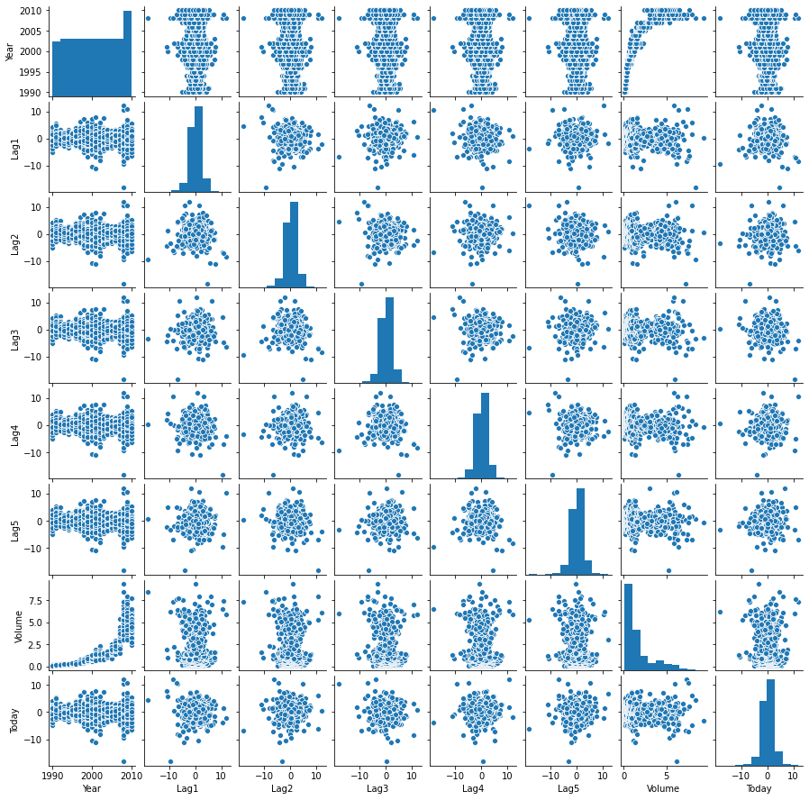
I am not really seeing any pattern in the pair plots except that the lags are always between -10 and 10, and there does not seem to be a lot correlation between the different lags. The correlation matrix will help to make this more concrete.
corr_mat = weekly.data[weekly.data.columns[:-1]].corr() fig, ax = plt.subplots(figsize=(8, 6)) cmap = sns.diverging_palette(220, 10, sep=80, n=7) mask = np.triu(np.ones_like(corr_mat, dtype=np.bool)) with sns.axes_style("white"): sns.heatmap(corr_mat, cmap=cmap, mask=mask, robust=True, annot=True, ax=ax) plt.tight_layout() fig.savefig("img/4.10.a_corr_mat.png", dpi=90) plt.close()
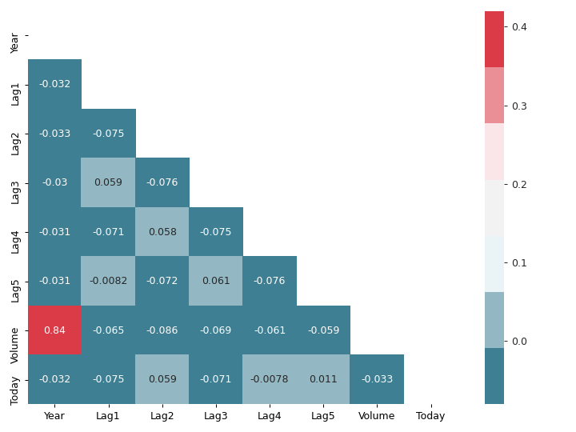
This matches the observation from the pair plots. There is a high correlation
between Year and Volume, but everything else is mostly uncorrelated with
each other.
(Note: Constructing seaborn pair plots are somewhat computationally intensive. Might be better to start with the correlation matrix.)
Logistic regression with entire data set
We will train a logistic regression model on the entire data set with
Direction as response and Lag1-5, and Volume as predictors. We will use
the logistic regression implementation from statsmodels. There are two ways of
doing it, using statsmodels.api or statsmodels.formula.api. I like the
elegant R-like formula syntax that statsmodels.formula.api provides, and I
am not a big fan of the exog / endog nomenclature used by statsmodels.api
(endog, exog, what’s that?). I will be using the statsmodels.formula.api
wherever possible.
More importantly we need to encode Direction as discussed earlier for
statsmodels logistic regression, scikit-learn can work with categorical
variables.
weekly_data = weekly.data.copy() weekly_data["Direction"] = weekly.data["Direction"].map({"Up": 1, "Down": 0}) logit_model = smf.logit("Direction ~ Lag1 + Lag2 + Lag3 + Lag4 + Lag5 + Volume", data=weekly_data).fit() print(logit_model.summary())
Optimization terminated successfully.
Current function value: 0.682441
Iterations 4
Logit Regression Results
==============================================================================
Dep. Variable: Direction No. Observations: 1089
Model: Logit Df Residuals: 1082
Method: MLE Df Model: 6
Date: Thu, 18 Jun 2020 Pseudo R-squ.: 0.006580
Time: 18:11:50 Log-Likelihood: -743.18
converged: True LL-Null: -748.10
Covariance Type: nonrobust LLR p-value: 0.1313
==============================================================================
coef std err z P>|z| [0.025 0.975]
------------------------------------------------------------------------------
Intercept 0.2669 0.086 3.106 0.002 0.098 0.435
Lag1 -0.0413 0.026 -1.563 0.118 -0.093 0.010
Lag2 0.0584 0.027 2.175 0.030 0.006 0.111
Lag3 -0.0161 0.027 -0.602 0.547 -0.068 0.036
Lag4 -0.0278 0.026 -1.050 0.294 -0.080 0.024
Lag5 -0.0145 0.026 -0.549 0.583 -0.066 0.037
Volume -0.0227 0.037 -0.616 0.538 -0.095 0.050
==============================================================================
Among the predictor variable only the Lag2 appear to be statistically
significant. Even then the p-value of 0.030 it still relatively large as
compared to p-values of statistically significant predictors that we have seen
in previous chapters. So Lag2 might still turn out to be statistically
insignificant.
Confusion matrix of above logistic regression
I got the idea of using percentages and labels in the heat map of the confusion matrix from Confusion Matrix Visualization.
def make_confusion_matrix_heatmap(conf_mat, categories, ax): """ Makes a heat map visualization of the confusion matrix. """ group_names = ["True Neg", "False Pos", "False Neg", "True Pos"] group_counts = [f"{value:.0f}" for value in conf_mat.flatten()] group_percentages = [f"{value:.2%}" for value in conf_mat.flatten()/np.sum(conf_mat)] labels = [f"{v1}\n{v2}\n{v3}" for v1, v2, v3 in zip(group_names,group_counts,group_percentages)] labels = np.asarray(labels).reshape(2,2) with sns.axes_style("white"): sns.heatmap(conf_mat, cmap="Blues", fmt="", annot=labels, cbar=False, xticklabels=categories, yticklabels=categories, ax=ax)
conf_mat = logit_model.pred_table(0.5) fig, ax = plt.subplots(figsize=(4, 4)) categories = ["Down", "Up"] make_confusion_matrix_heatmap(conf_mat, categories=categories, ax=ax) plt.tight_layout() fig.savefig("img/4.10.c_conf_mat.png", dpi=90) plt.close()
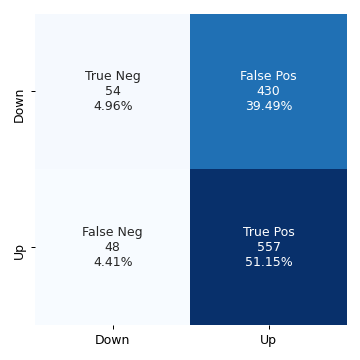
The values along the diagonal give the number of correct predictions. There were
54 instances of both the predicted and the observed responses being Down, and
557 instances of both the predicted and the observed responses being Up .
There were 430 instances where the observed response was Down, but the model
predicted it to be Up. These are the false positives. And there were 48
instances where the observed response was Up, but the model predicted it to be
Down. The accuracy of the model is defined as the ratio of the total number of
correct predictions to the total number of predictions.
accuracy = (np.sum(np.diag(conf_mat))) / np.sum(conf_mat) print(f"Accuracy: {accuracy:.2%}")
Accuracy: 56.11%
This is essentially the sum of the percentages on the diagonals in the above confusion matrix heat map.
Logistic regression with a subset of Weekly data set
Now we will train the logistic regression model to predict Direction with only
the data from 1990 to 2008, and with Lag2 as the only predictor.
weekly_training_set = weekly_data[weekly_data["Year"].between(1990, 2008)] weekly_test_set = weekly_data.drop(weekly_training_set.index) logit_model2 = smf.logit("Direction ~ Lag2", data=weekly_training_set).fit() print(logit_model2.summary())
Optimization terminated successfully.
Current function value: 0.685555
Iterations 4
Logit Regression Results
==============================================================================
Dep. Variable: Direction No. Observations: 985
Model: Logit Df Residuals: 983
Method: MLE Df Model: 1
Date: Thu, 18 Jun 2020 Pseudo R-squ.: 0.003076
Time: 19:22:59 Log-Likelihood: -675.27
converged: True LL-Null: -677.35
Covariance Type: nonrobust LLR p-value: 0.04123
==============================================================================
coef std err z P>|z| [0.025 0.975]
------------------------------------------------------------------------------
Intercept 0.2033 0.064 3.162 0.002 0.077 0.329
Lag2 0.0581 0.029 2.024 0.043 0.002 0.114
==============================================================================
Here we want the confusion matrix for the test set. The builtin pred_table
method from statsmodels does not work with data that has not been used for
training. We will use the confusion_matrix method from sklearn.metrics. An
alternative is to use numpy directly, as shown here.
pred = np.array(logit_model2.predict(weekly_test_set["Lag2"]) > 0.5, dtype="int") conf_mat2 = confusion_matrix(weekly_test_set["Direction"], pred) fig, ax = plt.subplots(figsize=(4, 4)) categories = ["Down", "Up"] make_confusion_matrix_heatmap(conf_mat2, categories=categories, ax=ax) plt.tight_layout() fig.savefig("img/4.10.d_conf_mat.png", dpi=90) plt.close()

We can see that the accuracy of this model is more (62.50%), even when it has not been trained on the test data set.
Linear discriminant analysis with a subset of Weekly data set
We use the same training and test data sets as before but now to fit a Linear
discriminant analysis model. We will use the linear discriminant analysis
implementation from scikit-learn.
lda_model = LinearDiscriminantAnalysis() lda_model.fit(weekly_training_set["Lag2"].values[:, None], weekly_training_set["Direction"].values) preds = lda_model.predict(weekly_test_set["Lag2"].values[:, None]) conf_mat_lda = confusion_matrix(weekly_test_set["Direction"], preds) fig, ax = plt.subplots(figsize=(4, 4)) categories =["Down", "Up"] make_confusion_matrix_heatmap(conf_mat_lda, categories, ax) plt.tight_layout() fig.savefig("img/4.10.e_conf_mat.png", dpi=90) plt.close()
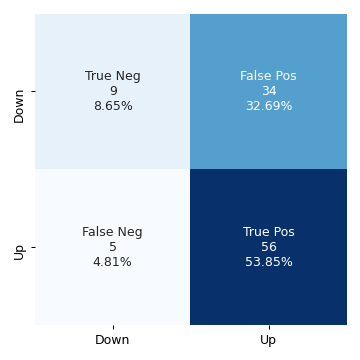
The LDA model has practically the same accuracy as the previous logistic regression model.
Quadratic discriminant analysis with a subset of Weekly data set
We will repeat the above for the quadratic discriminant analysis model.
qda_model = QuadraticDiscriminantAnalysis() qda_model.fit(weekly_training_set["Lag2"].values[:, None], weekly_training_set["Direction"].values) preds = qda_model.predict(weekly_test_set["Lag2"].values[:, None]) conf_mat_qda = confusion_matrix(weekly_test_set["Direction"], preds) fig, ax = plt.subplots(figsize=(4, 4)) categories =["Down", "Up"] make_confusion_matrix_heatmap(conf_mat_qda, categories, ax) plt.tight_layout() fig.savefig("img/4.10.f_conf_mat.png", dpi=90) plt.close()
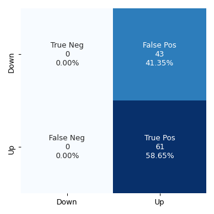
The QDA model does not give any negative results, but now the percentage of false positive rivals the percentage of true positives. The accuracy has decreased to 58.65%.
KNN (\(K = 1)\) with a subset of Weekly data set
Rinse and repeat but now with KNN for \(K = 1\).
knn_model = KNeighborsClassifier(n_neighbors=1) knn_model.fit(weekly_training_set["Lag2"].values[:, None], weekly_training_set["Direction"].values) preds = knn_model.predict(weekly_test_set["Lag2"].values[:, None]) conf_mat_knn = confusion_matrix(weekly_test_set["Direction"], preds) fig, ax = plt.subplots(figsize=(4, 4)) categories =["Down", "Up"] make_confusion_matrix_heatmap(conf_mat_knn, categories, ax) plt.tight_layout() fig.savefig("img/4.10.g_conf_mat.png", dpi=90) plt.close()
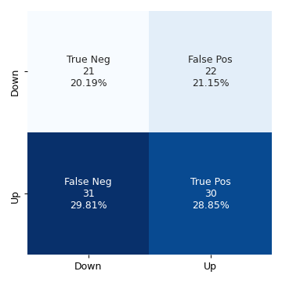
The KNN model with \(K = 1\) has an accuracy of 49.04%.
Best method for the Weekly data set
Logistic regression and Linear discriminant analysis appear to provide the best results on this data as they have the highest accuracy among the four models. KNN with \(K = 1\) gave the worst performance.
Question 11
In this question we do develop a classification model with the Auto data set
to predict whether a car gets high mileage or low mileage.
Add mpg01 column to Auto data set
auto_data = sm.datasets.get_rdataset("Auto", "ISLR").data median_mileage = auto_data["mpg"].median() auto_data["mpg01"] = np.where(auto_data["mpg"] > median_mileage, 1, 0) print(tabulate(auto_data.head(), auto_data.columns, tablefmt="orgtbl"))
| | mpg | cylinders | displacement | horsepower | weight | acceleration | year | origin | name | mpg01 | |----+-------+-------------+----------------+--------------+----------+----------------+--------+----------+---------------------------+---------| | 1 | 18 | 8 | 307 | 130 | 3504 | 12 | 70 | 1 | chevrolet chevelle malibu | 0 | | 2 | 15 | 8 | 350 | 165 | 3693 | 11.5 | 70 | 1 | buick skylark 320 | 0 | | 3 | 18 | 8 | 318 | 150 | 3436 | 11 | 70 | 1 | plymouth satellite | 0 | | 4 | 16 | 8 | 304 | 150 | 3433 | 12 | 70 | 1 | amc rebel sst | 0 | | 5 | 17 | 8 | 302 | 140 | 3449 | 10.5 | 70 | 1 | ford torino | 0 |
Graphical exploration of the new data set
We want to graphically see how does mpg01 associate with the other features in
our modified Auto data set. For this purpose we will use correlation matrix
and boxplots. We can also use paired scatterplots (pairplots in seaborn
parlance), but as I mentioned earlier seaborn's implementation of pairplots is
quite computationally intensive and so far I have not seen it provide any
information for classification problems that correlation matrix does not.
corr_mat = auto_data[auto_data.columns[1:]].corr() cmap = "RdBu" mask = np.triu(np.ones_like(corr_mat, dtype=np.bool)) fig, ax = plt.subplots(figsize=(8, 6)) with sns.axes_style("white"): sns.heatmap(corr_mat, cmap=cmap, mask=mask, annot=True, robust=True, ax=ax) plt.tight_layout() fig.savefig("img/4.11.b_corr_mat.png", dpi=90) plt.close()
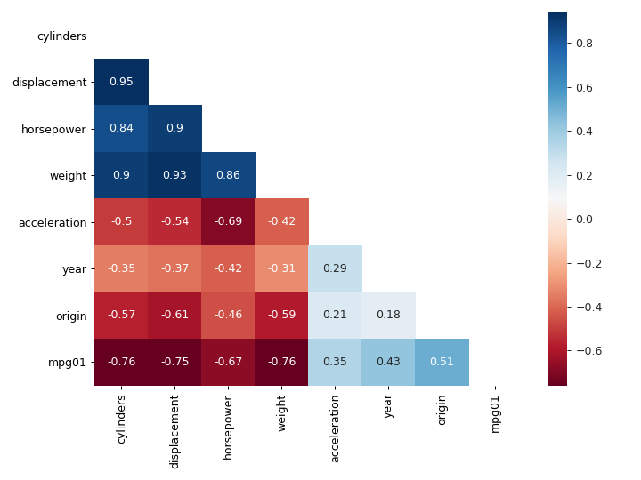
We see that mpg01 has high negative correlation with cylinders,
displacement, horsepower, and weight. These features also high correlation
with each other, for example displacement and cylinders have a correlation
of 0.95. This means if our model includes displacement then we do not gain any
new information by adding cylinders to it. Presumably we will be able to
predict mpg01 with just horsepower, one of displacement, cylinders and
weight, and maybe origin.
Let us now see what boxplots tell us.
fig, axs = plt.subplots(4, 2, figsize=(12, 10)) sns.boxplot(y="cylinders", x="mpg01", data=auto_data, ax=axs[0, 0]) sns.boxplot(y="displacement", x="mpg01", data=auto_data, ax=axs[0, 1]) sns.boxplot(y="horsepower", x="mpg01", data=auto_data, ax=axs[1, 0]) sns.boxplot(y="weight", x="mpg01", data=auto_data, ax=axs[1, 1]) sns.boxplot(y="acceleration", x="mpg01", data=auto_data, ax=axs[2, 0]) sns.boxplot(y="year", x="mpg01", data=auto_data, ax=axs[2, 1]) sns.boxplot(y="origin", x="mpg01", data=auto_data, ax=axs[3, 0]) plt.tight_layout() fig.savefig("img/4.11.b_box_plots.png") plt.close()
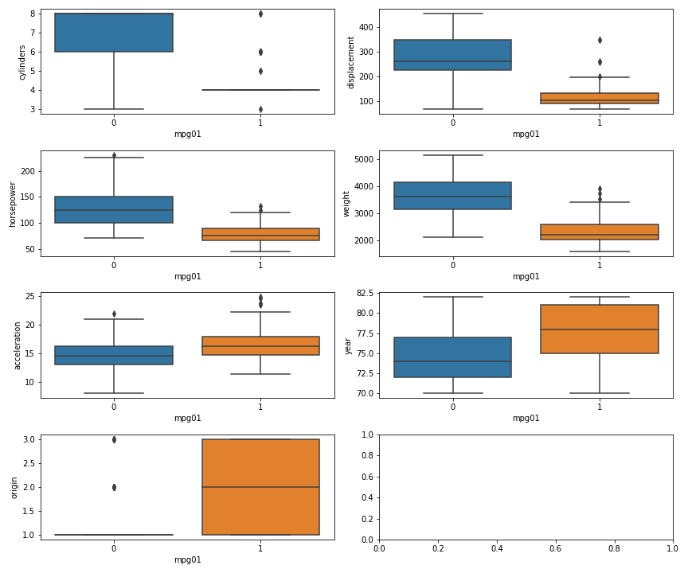
We see that having more cylinders (or displacement or horsepower or weight)
generally gives you low mileage. The origin really does not matter, since
except for a few outliers all have a mpg01 of 1. And as far as year and
acceleration are concerned, there are a fair bit of overlap between the
mpg01 = 0 and mpg01 = 1 groups, and it is difficult to draw any clear
conclusion from them. This essentially corroborates what we had learned from the
correlation matrix.
Training and test sets
We will use scikit-learn's train_test_split to create training and test
sets.
X = auto_data[["cylinders", "displacement", "horsepower", "weight"]] y = auto_data["mpg01"] train_X, test_X, train_y, test_y = train_test_split(X, y, random_state=42)
Linear discriminant analysis for mpg01
The question asks us to use all the features that seemed most associated with
mpg01. Even though I mentioned that the high correlation between cylinders,
displacement, and weight means that only one of them will be sufficient, we
will still use all of them here.
lda_model = LinearDiscriminantAnalysis() lda_model.fit(train_X, train_y) test_pred = lda_model.predict(test_X) conf_mat = confusion_matrix(test_pred, test_y) fig, ax = plt.subplots(figsize=(4, 4)) make_confusion_matrix_heatmap(conf_mat, [0, 1], ax) fig.savefig("img/4.11.d_conf_mat.png", dpi=90) plt.close()
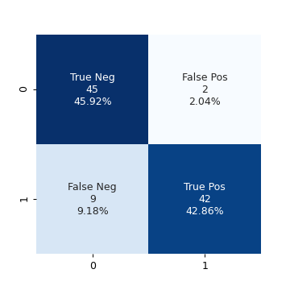
This model has a very high accuracy of 88.78%. Or in other words the test error
is ≈ 0.11. Just for curiosity I want to try a model with just cylinders as the
predictor.
train_X_cyl = train_X["cylinders"] test_X_cyl = test_X["cylinders"] lda_model_cyl = LinearDiscriminantAnalysis() lda_model_cyl.fit(train_X_cyl.values[:, None], train_y) test_pred_cyl = lda_model_cyl.predict(test_X_cyl.values[:, None]) conf_mat_cyl = confusion_matrix(test_pred_cyl, test_y) fig, ax = plt.subplots(figsize=(4, 4)) make_confusion_matrix_heatmap(conf_mat_cyl, [0, 1], ax) fig.savefig("img/4.11.d_conf_mat_cyl.png", dpi=90) plt.close()

This model has a comparable accuracy of 87.76% (test error ≈ 0.12), the true positives decreased by 1, while the false positives increased by 1. Essentially we got the same result with a single feature as we did by using four features. So the other features are indeed superfluous.
Quadratic discriminant analysis for mpg01
Following the realization made in the previous question, I will use only
cylinders for prediction using quadratic discriminant analysis.
qda_model_cyl = QuadraticDiscriminantAnalysis() qda_model_cyl.fit(train_X_cyl.values[:, None], train_y) test_pred_cyl = qda_model_cyl.predict(test_X_cyl.values[:, None]) conf_mat_cyl_qda = confusion_matrix(test_pred_cyl, test_y) fig, ax = plt.subplots(figsize=(4, 4)) make_confusion_matrix_heatmap(conf_mat_cyl_qda, [0, 1], ax) fig.savefig("img/4.11.d_conf_mat_cyl_qda.png", dpi=90) plt.close()

This model has the same accuracy as the LDA model with just cylinders. For
completeness I will also try a second model with the other features.
qda_model = QuadraticDiscriminantAnalysis() qda_model.fit(train_X, train_y) test_pred = qda_model.predict(test_X) conf_mat_qda = confusion_matrix(test_pred, test_y) fig, ax = plt.subplots(figsize=(4, 4)) make_confusion_matrix_heatmap(conf_mat_qda, [0, 1], ax) fig.savefig("img/4.11.d_conf_mat_qda.png", dpi=90) plt.close()
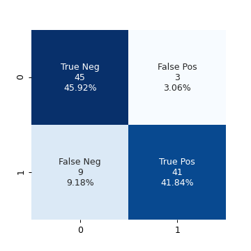
The accuracy did not change.
Logistic regression for mpg01
Since we are not interested in the summary of the logistic regression model, we
will use scikit-learn's implementation of logistic regression. In fact this
will be template by which we decide whether to use statsmodels or
scikit-learn: If we are more interested in the statistical summary of the
model then we will statsmodels. If we are more interested in predictions then
we will use scikit-learn.
logit_model = LogisticRegression() logit_model.fit(train_X_cyl.values[:, None], train_y) test_pred = logit_model.predict(test_X_cyl.values[:, None]) conf_mat_logit = confusion_matrix(test_pred, test_y) fig, ax = plt.subplots(figsize=(4, 4)) make_confusion_matrix_heatmap(conf_mat_logit, [0, 1], ax) fig.savefig("img/4.11.d_conf_mat_logit.png", dpi=90) plt.close()
Same accuracy as the QDA model.
KNN for mpg01
We will try KNN with \(K ∈ \{1, 10, 100\}\).
for k in np.logspace(0, 2, num=3, dtype=int): knn_model = KNeighborsClassifier(n_neighbors=k) knn_model.fit(train_X_cyl.values[:, None], train_y) acc = accuracy_score(knn_model.predict(test_X_cyl.values[:, None]), test_y) print(f"K: {k:3}, Accuracy: {acc:.2%}, Test error: {1 - acc:.2f}")
K: 1, Accuracy: 87.76%, Test error: 0.12 K: 10, Accuracy: 87.76%, Test error: 0.12 K: 100, Accuracy: 87.76%, Test error: 0.12
We get the same accuracy for all the three values of \(K\). We will try this again including the other features.
for k in np.logspace(0, 2, num=3, dtype=int): knn_model = KNeighborsClassifier(n_neighbors=k) knn_model.fit(train_X, train_y) acc = accuracy_score(knn_model.predict(test_X), test_y) print(f"K: {k:3}, Accuracy: {acc:.2%}, Test error: {1 - acc:.2f}")
K: 1, Accuracy: 83.67%, Test error: 0.16 K: 10, Accuracy: 85.71%, Test error: 0.14 K: 100, Accuracy: 85.71%, Test error: 0.14
We see that for \(K = 10, 100\) the accuracy is better compared to
the \(K = 1\) case. However the accuracy has in fact decreased from the previous
model with just cylinder as the predictor. This is most likely due to the
"curse of dimensionality". This an empirical "proof" that for KNN
low-dimensional models, whenever possible, are better.
Question 13
In this question we will predict if a given suburb of Boston has a crime rate
above or below the median crime rate using the Boston data set. We will
explore logistic regression, LDA and KNN models. This is very similar to the
question above. We will start with some graphical explorations.
boston_data = sm.datasets.get_rdataset("Boston", "MASS").data print(tabulate(boston_data.head(), boston_data.columns, tablefmt="orgtbl"))
| | crim | zn | indus | chas | nox | rm | age | dis | rad | tax | ptratio | black | lstat | medv | |----+---------+------+---------+--------+-------+-------+-------+--------+-------+-------+-----------+---------+---------+--------| | 0 | 0.00632 | 18 | 2.31 | 0 | 0.538 | 6.575 | 65.2 | 4.09 | 1 | 296 | 15.3 | 396.9 | 4.98 | 24 | | 1 | 0.02731 | 0 | 7.07 | 0 | 0.469 | 6.421 | 78.9 | 4.9671 | 2 | 242 | 17.8 | 396.9 | 9.14 | 21.6 | | 2 | 0.02729 | 0 | 7.07 | 0 | 0.469 | 7.185 | 61.1 | 4.9671 | 2 | 242 | 17.8 | 392.83 | 4.03 | 34.7 | | 3 | 0.03237 | 0 | 2.18 | 0 | 0.458 | 6.998 | 45.8 | 6.0622 | 3 | 222 | 18.7 | 394.63 | 2.94 | 33.4 | | 4 | 0.06905 | 0 | 2.18 | 0 | 0.458 | 7.147 | 54.2 | 6.0622 | 3 | 222 | 18.7 | 396.9 | 5.33 | 36.2 |
As we did in the previous question we will create a column crim01 which is 0
if the crime rate is less than the median crime rate and 1 otherwise.
median_crim = boston_data["crim"].median() boston_data["crim01"] = np.where(boston_data["crim"] > median_crim, 1, 0) corr_mat = boston_data[boston_data.columns[1:]].corr() fig, ax = plt.subplots(figsize=(10, 8)) cmap = "RdBu" mask = np.triu(np.ones_like(corr_mat, dtype=np.bool)) sns.heatmap(corr_mat, cmap=cmap, mask=mask, annot=True, robust=True, ax=ax) plt.tight_layout() fig.savefig("img/4.13_corr_mat.png", dpi=120) plt.close()
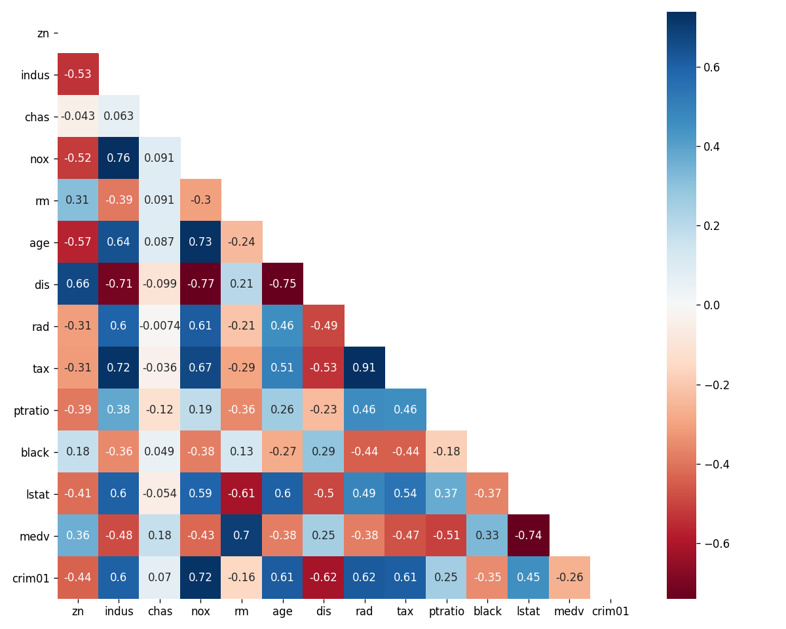
We see that crim01 has appreciable positive correlation with the indus,
nox, age, rad, and tax features and appreciable negative correlation
with the dis feature. We will use these features to predict crim01.
We will split the data set into training and test sets and then try the different models.
X = boston_data[["indus", "nox", "age", "rad", "tax", "dis"]] y = boston_data["crim01"] train_X, test_X, train_y, test_y = train_test_split(X, y, random_state=42)
Logistic Regression
logit_model = LogisticRegression() logit_model.fit(train_X, train_y) acc = accuracy_score(logit_model.predict(test_X), test_y) print(f"Accuracy: {acc:.2f}, Test error: {1 - acc:.2f}")
Accuracy: 0.81, Test error: 0.19
Linear Discriminant Analysis
lda_model = LinearDiscriminantAnalysis() lda_model.fit(train_X, train_y) acc = accuracy_score(lda_model.predict(test_X), test_y) print(f"Accuracy: {acc:.2f}, Test error: {1 - acc:.2f}")
Accuracy: 0.83, Test error: 0.17
KNN
for k in np.logspace(0, 2, num=3, dtype=int): knn_model = KNeighborsClassifier(n_neighbors=k) knn_model.fit(train_X, train_y) acc = accuracy_score(knn_model.predict(test_X), test_y) print(f"K: {k:3}, Accuracy: {acc:.2f}, Test error: {1 - acc:.2f}")
K: 1, Accuracy: 0.85, Test error: 0.15 K: 10, Accuracy: 0.87, Test error: 0.13 K: 100, Accuracy: 0.79, Test error: 0.21
Reduced data set
We see that the KNN model with \(K = 10\) had the highest accuracy over the test
set. This was with the features indus, nox, age, rad, tax, and dis.
From the correlation matrix we see that tax and rad has a very high
correlation (0.91). Similarly nox has high correlations with indus (0.76),
age (0.73), and dis (-0.77); age and dis (-0.75) also have high
correlations. We know that the KNN model suffers from the curse of
dimensionality. If we remove some of these highly correlated features from the
training data set, maybe the accuracy of the KNN models will increase further.
While we are at it we will also try training the logistic regression and LDA
models with the reduced data set.
train_X_reduced = train_X[["indus", "dis", "tax"]] test_X_reduced = test_X[["indus", "dis", "tax"]] logit_model = LogisticRegression() logit_model.fit(train_X_reduced, train_y) acc = accuracy_score(logit_model.predict(test_X_reduced), test_y) print(f"Logistic regression: Accuracy: {acc:.2f}, Test error: {1 - acc:.2f}") lda_model = LinearDiscriminantAnalysis() lda_model.fit(train_X_reduced, train_y) acc = accuracy_score(lda_model.predict(test_X_reduced), test_y) print(f"LDA: Accuracy: {acc:.2f}, Test error: {1 - acc:.2f}") print("KNN:") for k in np.logspace(0, 2, num=3, dtype=int): knn_model = KNeighborsClassifier(n_neighbors=k) knn_model.fit(train_X_reduced, train_y) acc = accuracy_score(knn_model.predict(test_X_reduced), test_y) print(f"K: {k:3}, Accuracy: {acc:.2f}, Test error: {1 - acc:.2f}")
Logistic regression: Accuracy: 0.79, Test error: 0.21 LDA: Accuracy: 0.80, Test error: 0.20 KNN: K: 1, Accuracy: 0.91, Test error: 0.09 K: 10, Accuracy: 0.87, Test error: 0.13 K: 100, Accuracy: 0.80, Test error: 0.20
This is an interesting result. The accuracy of both the logistic regression and the LDA models decreased with the reduced data set. But the accuracy of all the KNN models increased, and the model with \(K = 1\) now has the highest accuracy.